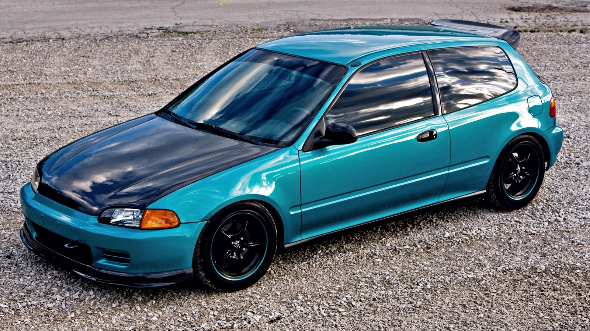
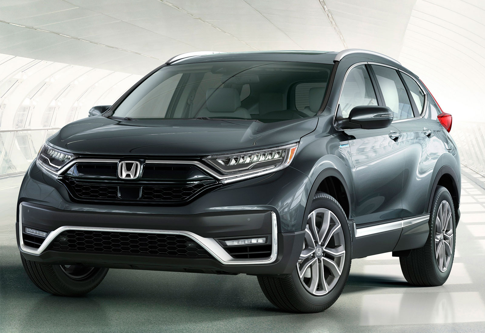

Honda Civic
Honda Civic (яп. ホンダ・シビック,'sɪvɪk[3] — Си́вик) — компактный автомобиль с поперечно расположенным двигателем,
выпускаемый компанией Honda.
Впервые представлен в июле 1972 г.
Во многом благодаря этой модели, компания Honda вошла в список мировых автопроизводителей.
Civic стал первым массовым японским автомобилем.
Civic считается автомобилем среднего размера, хотя и конкурирует в компактном классе.
Название англ. Civic означает «гражданский», «общественный».
В августе 2010 года компания Honda прекратила выпускать в Японии модель Civic по причине низких продаж.
Однако Civic был вновь представлен на японском рынке с запуском модели десятого поколения в 2017 году.

Honda CR-V
Honda CR-V — компактный кроссовер, выпускающийся компанией Honda с 1995 года.
Аббревиатура CR-V для европейских рынков расшифровывается как Compact Recreational Vehicle, что в переводе с англ.
означает «компактный автомобиль для отдыха» (на природе). Для Японии — Comfortable Runabout Vehicle.
Производство CR-V для международных рынков началось в городе Саяма (Япония) и Суиндон (Великобритания).
В 2007 году к ним добавился североамериканский завод в Ист Либерти, Огайо, в 2007 завод в мексиканском Эль Сальто, а в 2012 — в канадской провинции Онтарио.
Также CR-V производится в Китае, на мощностях совместного предприятия Dongfeng Honda Automobile Company — автомобили предназначены для внутреннего китайского рынка.

Honda HR-V
Honda HR-V (Hi-rider Revolutionary Vehicle) — мини-кроссовер компании Honda.
В 1998 году дебютировала.
Дизайн экстерьера 3-дверного автомобиля отличается оригинальным исполнением передней части кузова, мощными крыльями, «острой» линией боковых окон.
Автомобиль выпускался в передне- или полноприводном (4WD Real Time с двойным насосом) варианте.
Оснащался 5-ступенчатой механической коробкой передач или фирменной трансмиссией Honda под названием Multi Matic S.
На HR-V устанавливались 2 типа двигателя серии LEV: 1.6-литровые рядные 4-цилиндровые 16-клапанные SOHC и SOHC VTEC.
1998 Honda HR-VВ 1998 году был начат выпуск версии с трёхдверным кузовом.
Автомобиль оснащался двигателем объёмом 1,6 литра мощностью 105 л.с. На выбор предлагались пятиступенчатая механическая коробка передач либо клиноременный вариатор.
Машина могла быть как переднеприводной, так и с приводом на все колёса. Для передачи крутящего момента на задние колёса служила система DPS.
В 1999 году появился пятидверный вариант.
Двигатель мог теперь по выбору оснащаться системой VTEC и иметь мощность 125 л.с. В 2001 году HR-V претерпел лёгкий рестайлинг, коснувшийся некоторых элементов внешней и внутренней отделки.
В 2003 году с производства была снята трёхдверная версия. В 2006 году выпуск модели был прекращён.